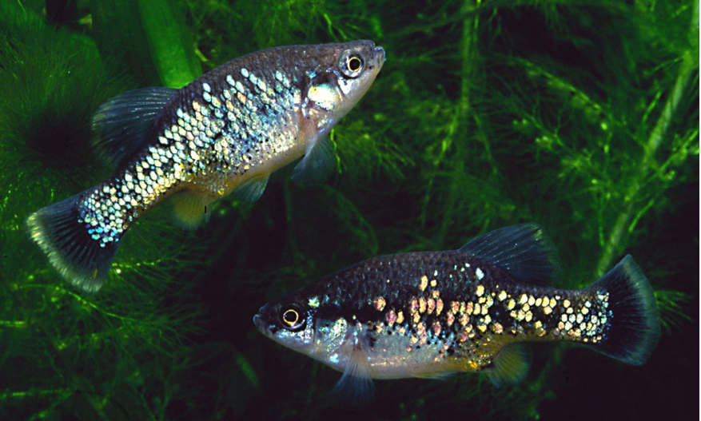

Systématique
- Ordre : Cyprinodontiformes
- Famille : Goodeidae
- Genre : Xenotoca
- Espèce : X. variata
- Auteur : (Bean, 1887)

Xenotoca variata est une espèce robuste de goodeidé mexicain, souvent considérée comme l'espèce type de son genre. Elle est moins "flamboyante" que sa cousine Xenotoca eiseni, mais elle arbore une subtilité de couleurs irisées qui varie grandement selon les populations et l'éclairage, d'où son nom spécifique.
Le mâle atteint environ 6 cm, tandis que la femelle peut atteindre 8 cm. Le corps est compact, haut et puissant. Les mâles se distinguent par des écailles aux reflets bleus, verts ou turquoise sur les flancs, avec une zone abdominale souvent plus claire. Contrairement à X. eiseni, ils ne possèdent pas la queue rouge vif, mais peuvent présenter des liserés jaunes ou orangés sur les nageoires impaires. La femelle est de couleur olive ou brune avec un patron de taches sombres irrégulières.
L'espèce est actuellement classée "Préoccupation mineure" (LC) par l'UICN en raison de sa large répartition, mais elle reste sensible à la dégradation locale de son habitat, notamment dans les zones soumises à une forte activité agricole.
Xenotoca variata est un poisson très actif et curieux. Bien qu'il soit moins agressif que X. eiseni, il conserve le tempérament vif des goodeidés. Il est conseillé de le maintenir en groupe pour observer son comportement social naturel, où les mâles paradent fréquemment pour établir une hiérarchie.
C'est une espèce qui s'adapte à de nombreux types d'environnements aquatiques, des eaux claires aux zones plus troubles. En aquarium, il apprécie un espace de nage dégagé au centre, bordé d'une végétation dense permettant aux femelles de se reposer. Il est très vorace lors des distributions de nourriture.
Mode : Vivipare matrotrophe.
La reproduction est typique des Goodeinae. Les embryons se développent dans l'ovaire de la femelle et sont nourris via des trophotaeniae. La gestation dure généralement entre 55 et 60 jours.
Les portées varient de 10 à 40 alevins selon la taille de la femelle. Les nouveau-nés sont robustes et mesurent environ 12 à 15 mm à la naissance. Ils sont capables de consommer immédiatement des nauplies d'artémias ou de la nourriture fine. Le cannibalisme des adultes est limité, mais une bonne couverture végétale (mousse, plantes flottantes) assure un meilleur taux de survie.
Dimorphisme sexuel : Le mâle possède un andropodium (encoche sur la nageoire anale) et des reflets irisées bleus/verts sur les flancs. La femelle est plus grande, plus massive et présente un patron de coloration moucheté plus discret.
Espérance de vie : 3 à 5 ans en aquarium.
L'espèce possède l'une des aires de répartition les plus vastes parmi les goodeidés. On la trouve dans le bassin du Rio Lerma, le Rio Grande de Santiago, le Rio Pánuco et le Rio Ameca. Elle fréquente les lacs (comme le lac Cuitzeo), les sources, les canaux d'irrigation et les rivières à courant lent.
L'eau y est généralement alcaline et moyennement dure. L'espèce tolère une large gamme de températures, ce qui lui a permis de coloniser des environnements variés du plateau central mexicain. Le substrat est souvent boueux ou composé de graviers fins, avec une présence notable de végétation aquatique et d'algues.
Répartition

Origine naturelle :
- Mexique : Bassins des Rios Lerma, Santiago, Pánuco et Ameca.
- États de Guanajuato, Jalisco, Michoacán, Querétaro et San Luis Potosí.
- L'un des goodeidés les plus répandus géographiquement.
Bien qu'adaptable, les populations du bassin du Rio Pánuco sont parfois considérées comme distinctes ou méritant une attention taxonomique particulière.
Paramètres de maintenance
Température : 18 à 25 °C. Supporte bien les baisses nocturnes ou saisonnières.
pH : 7,0 à 8,2.
GH : 10 à 25 °dGH.
Courant : Faible à modéré.
Volume conseillé : 80–100 L pour un groupe, bac bien filtré et oxygéné.
Régime alimentaire
Régime : Omnivore à tendance algivore.
En aquarium, il accepte tout type de nourriture, mais nécessite impérativement une part végétale importante (spiruline, algues) pour rester en bonne santé. Un apport de proies vivantes ou congelées est recommandé pour stimuler la reproduction.